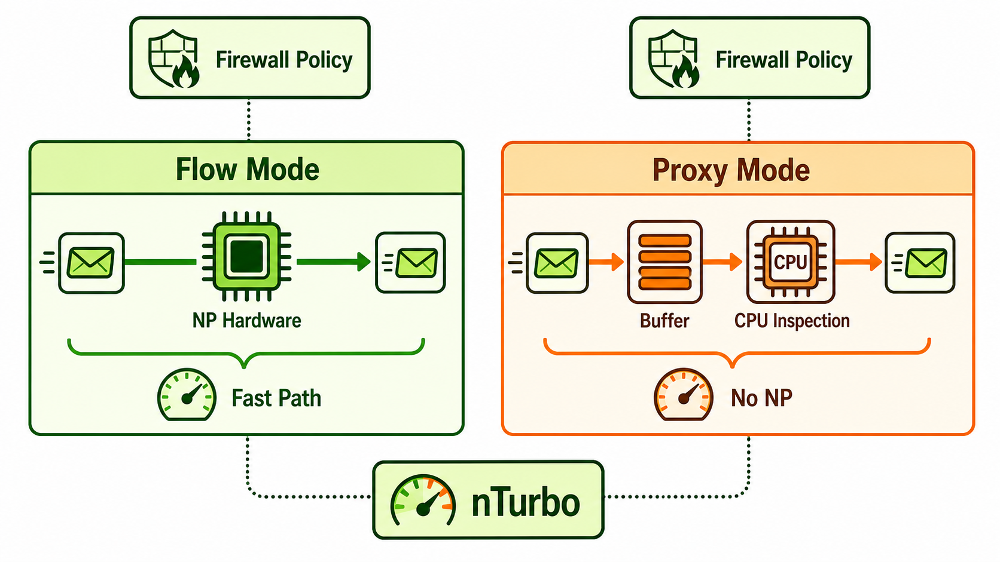

Overview
The fundamental configuration choice that determines NP hardware utilization is the inspection mode applied to a firewall policy: flow mode or proxy mode. In flow mode, FortiGate inspects packets as they pass through, without buffering entire protocol streams. This is compatible with NP offloading — once FortiGate has made the initial policy and security profile decisions for a session, the NP hardware can take over packet forwarding for subsequent packets in that session. In proxy mode, FortiGate acts as an inline proxy: it terminates the connection on one side, buffers the complete protocol data, inspects it, and reconstructs the connection on the other side. This requires continuous CPU involvement and cannot be NP offloaded.
Session offloading is not binary at the session level — FortiGate makes the NP offload decision per session after the first packet. If the session's policy uses flow mode and no features that prevent offloading are enabled, the session is offloaded to NP hardware after the initial CPU processing. The CLI exposes the offload state of each session. nTurbo (also called IPS offload) is a partial acceleration mode: when IPS is enabled on a policy, nTurbo allows FortiGate to offload the NP-eligible portions of session processing while still sending packets to the IPS engine. It does not provide full NP offload, but it significantly reduces CPU load compared to pure proxy mode.
The `npu-vdom-based-offload` setting controls whether inter-VDOM traffic can be NP offloaded when traffic crosses VDOM boundaries via NPU VDOM links. This is a relevant configuration parameter in multi-VDOM deployments where traffic flows between VDOMs internally. Understanding when offloading is disabled, how to configure policies to maximize NP utilization, and how to verify offload state from the CLI are the practical skills this session develops.

Flow mode vs proxy mode comparison diagram
Target Questions
These are the questions your Socratic session will explore. Read them before you start — they tell you what understanding to look for while reviewing the study guide.
- 1What is the fundamental difference between flow mode and proxy mode in FortiGate packet processing?
- 2Which mode allows NP hardware offloading and which forces CPU processing?
- 3How do you configure a specific firewall policy to use flow mode vs proxy mode?
- 4What is session offloading — when does FortiGate decide to offload a session to NP hardware?
- 5What is nTurbo and what does it enable for IPS-inspected traffic?
- 6What is the
npu-vdom-based-offloadsetting and what does it control? - 7What happens to NP offloading when IPS is enabled on a firewall policy?